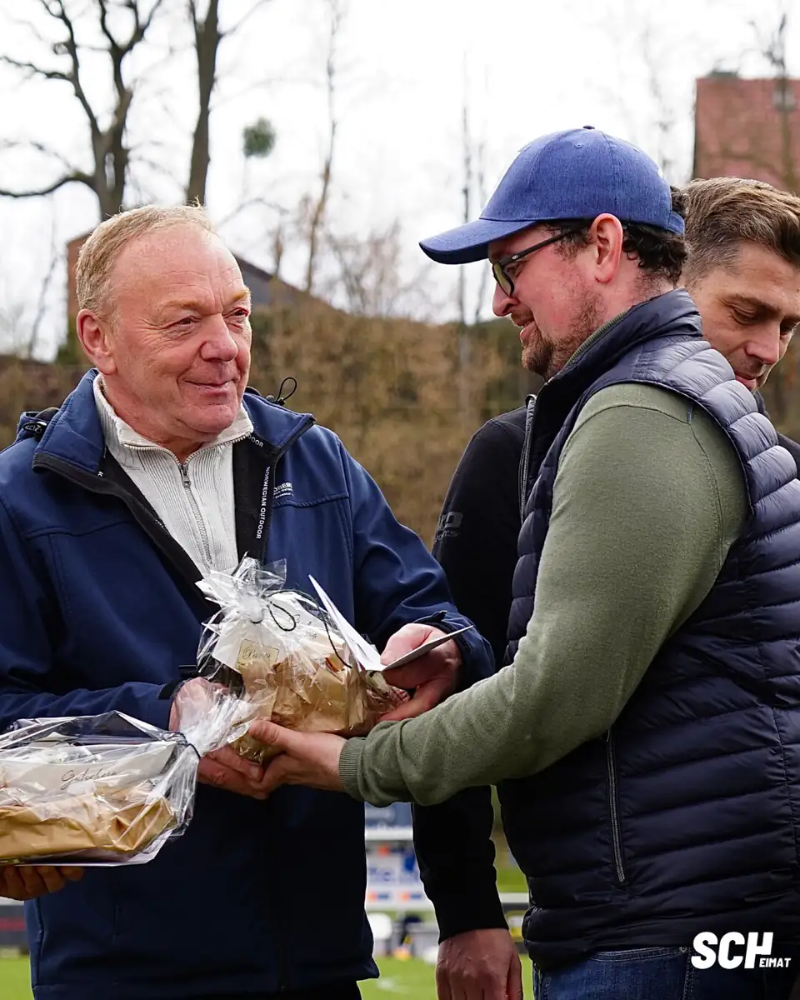
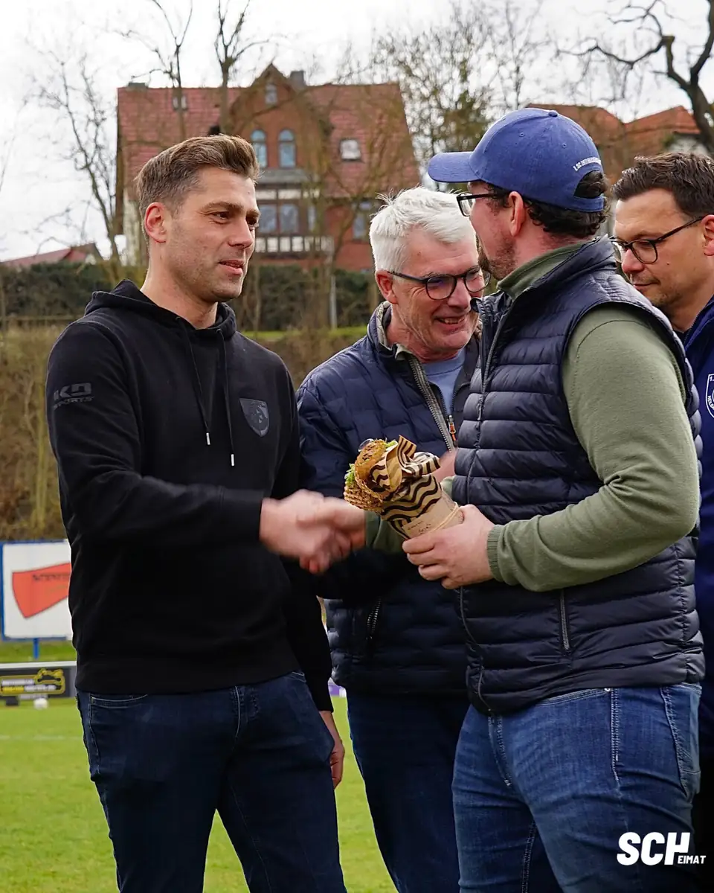
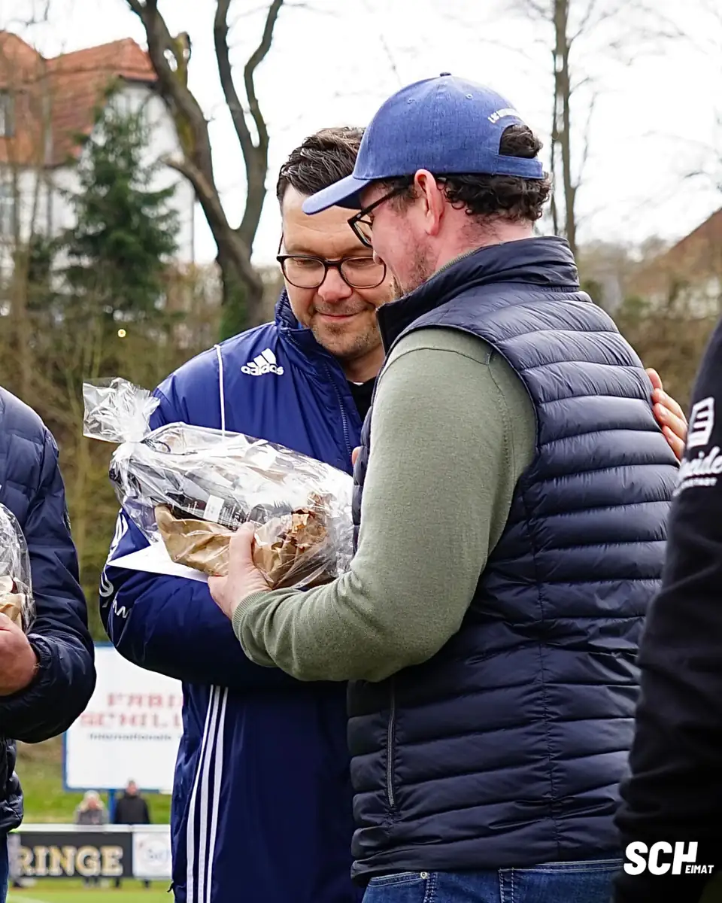
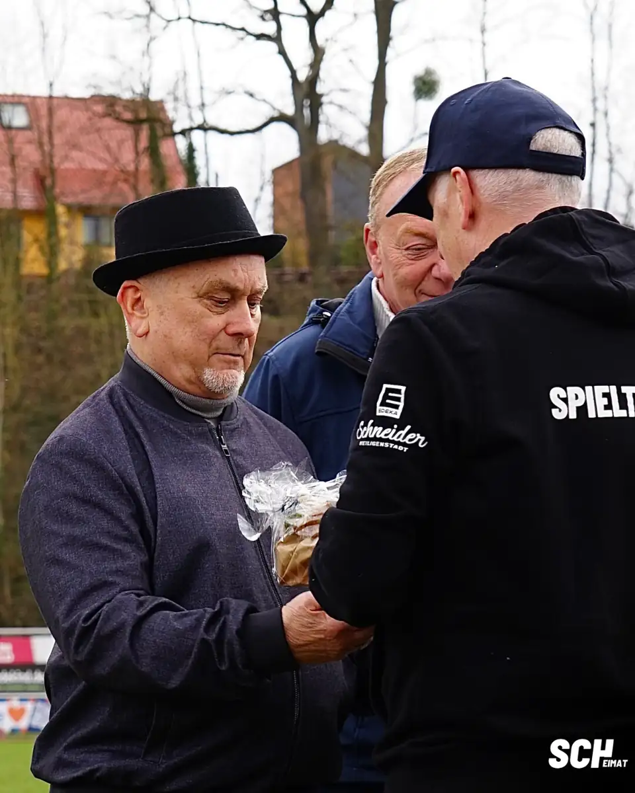
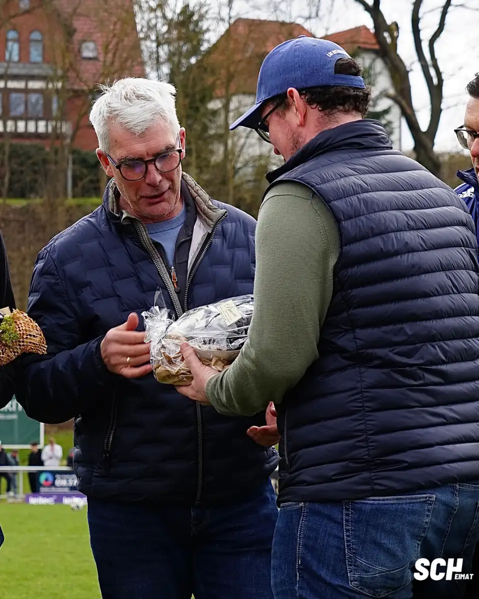

Ein besonderer Moment im Gesundbrunnen – mehr als nur Fußball
Die Halbzeitpause unseres Oberligaspiels am Samstag bot einen ganz besonderen Rahmen. Während auf dem Platz kurz durchgeatmet wurde, rückte das in den Mittelpunkt, was unseren Verein seit jeher ausmacht: Menschen, die ihn über viele Jahre hinweg geprägt haben.
125 Jahre Vereinstreue
Gemeinsam durften wir fünf langjährige Vereinsmitglieder ehren – und die Zahl dahinter spricht für sich: unglaubliche 125 Jahre Vereinszugehörigkeit. Eine Zahl, die nicht nur beeindruckt, sondern vor allem zeigt, wie viel Herzblut, Leidenschaft und Verbundenheit in unserem Verein stecken.
Ein runder Geburtstag als besonderes Highlight
Als wäre das noch nicht besonders genug gewesen, gab es zusätzlich noch einen runden Geburtstag zu feiern. Ein Moment, der die Ehrung perfekt abgerundet hat und einmal mehr gezeigt hat, wie eng Gemeinschaft und Verein bei uns zusammengehören.
Danke für eure Treue
Solche Augenblicke sind es, die unseren Verein besonders machen. Sie erinnern daran, dass der Fußball zwar auf dem Platz gespielt wird – der wahre Wert eines Vereins aber in den Menschen liegt, die ihn tragen.
Danke für eure jahrelange Treue, euren Einsatz und eure Unterstützung. Ihr seid ein wichtiger Teil unserer Blau-Weißen Familie.




